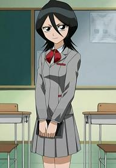

Bleach
 De: La Frikipedia, la enciclopedia extremadamente seria.
De: La Frikipedia, la enciclopedia extremadamente seria.

|
Este artículo necesita ser ilustrado. Busca una afoto en nuestro depósito de imágenes o donde sea y ponla, pero que no sea pr0n, que se cabrea el señor del adSense y nos corta el grifo de los dólare. Y sin dólare no hay servidor...
|
| De la serie anime para todos:
|
| Bleach
|
|
|
| Género:
|
Shonen
|
| Episodios:
|
Sigue poniendo gorro pero se detuvo por falta de Ideas
|
| Autor del manga:
|
Un Cani
|
| Publicación:
|
2001-hasta que Kubo le de pereza de terminar
|
| Publicado en:
|
Shonen Dump
|
| Director del anime:
|
Noriyuki Abe
|
| Transmitido en:
|
Japón, España , Latinoámerica y la Chingada
|
| Ovas:
|
2 (que pobre para un gran anime)
|
| Películas:
|
4
|
| Notas
|
Este muy conocido como Naruto pero no tan conocido y no tiene que ver nada con cloro
|
Bleach tiene como traducción lejía (Blanqueador, cloro) en inglés, y también se puede escribir "Vlich" o "Blix" e incluso Bitch. Es una serie que es la competencia de Naruto aunque a algunos le parece que es al contrario. A los de Naruto les fastidia un huevo que el relleno de Bleach sea infinitamente mejor que el suyo (o incluso mas), mas que nada porque el relleno de Naruto tiende a cero (O incluso menos). La protagoniza, un personaje de pelo naranja; y el flipado que escribe esta serie se hace llamar Tite Kubo. Tite Kubo Es un inmenso flipado de Dragon Ball y le apetecía hacer una historia de un estilo similar.
Hay que hacer la anotación de que los fans de Bleach no son molestos, cosa que los de Naruto si que lo son y bastante, sobre todo aquellos que se compran banditas como las que se ponen los de Naruto cuando llegan al máximo estado de flipación. Los internautas de Bleach son más discretos aunque a veces les da por liberar sus Zanpankutos y sus Bankais en publico, siendo denunciados continuamente por escándalo público y/o exhibicionismo.
Historia
La historia es de uno llamado Ichigo Freso, aunque su pelo es color zanahoria. Aunque en la serie dicen que tiene quince años en realidad tiene unos 34, pues el chaval tiene alucinaciones (Hoy en día a todos nos pasa a ciertas horas) y vamos el máximo del flipe es cuando estaba en su habitación y se le cuela una juerguista que no mide ni metro y medio (Una niña, vamos) llamada Ruca que perseguía a un bicho y dice que es Shinigami (Excusa nueva para pedir), que tiene sabe Diox cuántos años (La niña) y le dice que como no se apresure, ya veras qué daño. Entonces el bicho daña a la juerguista y le da lo que se fuma para que le ayude a alucinar, y Fresito adquiere poderes (Eso o un subidón que no veas xD). Logran ganar al bicho y desde entonces se va a la esquina (le llaman Suciedad de almas) a descubrir a otros flipaos como él. Los clanes del lugar se hacen llamar Divisiones, y nada del otro mundo, hay peleas a cada hora con unas espadas llamadas Zanpakuto (Ahora llaman a las cachimbas así) y se joden la vida día tras día...
El bicho, por cierto era un escarabajo, lo que pasa es que con el efecto de las drogas, vieron como crecía de golpe y parecía con capacidad para matar.
La idea de la serie es descubrir quién cojones es el bueno en esta historia. Excepto después del fin de la primera temporada, que luego mas adelante, a partir de lo que va a suceder después de la temporada comienza a padecer del Síndrome de Dragon Ball. Ya que descubren droga definitiva, y descubren que pueden convertirse en una especie de semi-hollows pero siguen siendo buenos, aunque no lo parezca por el extraño comportamiento de Freso cuando eso ocurre.
Hoy en día la serie va super pegada al manga por lo que se va a joder y dejar de publicar un buen rato el anime, ya que a los del estudio se quedaron sin droga y no pudieron poner mas relleno, que es muy superior al inmenso truño que estan giñando en Naruto. En el manga no pasa nada todo sige igual aunque los capitanes cada vez sacan un maldito bankai nuevo. Ichigo actualmente va por la transformación de Super Sayan 3. Por lo que hemos podido ver, él no necesita las esferas del dragón para poder revivir. Dejo ortopedico y manco a su amigo ulqui solo porque la Tetona pelirroja le ponia los cuernos con él. Claro que tuvo que sacar su mascaro glich y chetos varios para vencerle.
Tiende a ser siempre más fuerte. Se dice que Ichigo va a superar en fuerza a Goku y a todos los personajes de Dragon Ball juntos, y que llegará a ser super sajayin 999999. Incluso dicen que consigue hacer la bola Genki con la nariz estando tumbado en el sofá.
Personajes
Protas
Una foto del Fresito del Prota,asi o mas Literal
- Kurosaki Ichigo "El Fresito", alias el pelopincho, alias el cabeza de zanahoria y si miramos bien tambien es 15: El prota que descubrió a fliparse más que con la Ps2. Nunca pierde, es omnipresente, sangra más que un cochino degollado pero nunca se desangra, tiene doble personalidad,una de ellas es mala y es más feo que pegar a un padre con un calcetín sudado en la puerta de una Iglesia. En resumen es Dios(Mentira, todos sabemos que Dios es una adolescente japonesa). Para los más curiosos, Ichigo es "fresa" en japonés, pero nuestro prota se llama Íchigo, osea quince. Su sueño es modificar la biblia poniendo su nombre en substitucion de Dios y cambiar el crucifijo por una fresa. Ve con cuidado ahora con las fresas, que pueden provocarte alucinaciones, ya que llevan el espíritu de Ichigo. Pero pese a ser el prota de la serie es subnormal, el tio tiene las mejores y mas tetudas tias detras suyo (También las peores y mas planas pero bueno) y él ni se entera, y suda de ellas. Cuando se le ponen los ojos azules, se puede saber que ya ganó y todo mundo se puede ir a su casa y hacerse un pete (A lo de los ojos azules se le llama sindrome del Super Sayajin). su espada se llama Zangetsu
aunque no sabemos por qué a las espadas se les pone nombre.
 Kuchiki Rukia,Tranquilos ,no se emocionen,recuerden que tiene mas de 50 años XD.
- Kuchiki Rukia: "La Tabla de Planchar": Este personaje del clan Kuchiki, parece una respetuosa mujer, pero le gusta mucho la juerga, aunque se suele arrepentir por pasarle sus poderes a Ichigo porque los quiere para ella sola. Es Shinigami y está obsesionada con el Hadou nº 33 y el 31, a lo mejor no aprendió a hacer otros. Tiene las mejores piernas de cualquier anime, lástima de que casi no tenga tetas :3. Su habitat natural son los closets de la gente y si abres el tuyo a las dos de la mañana es probable que la encuentres leyendo un libro erotico y te suelte una hostia que te descojone (O peor aun, una patada en los cojones)
- Ishida Uryuu: "El Quincy amariconado": Gafotas con nombre impronunciable, es el más guay de la serie, y por eso siempre va fumao. Es un Quincy o algo parecido: son humanos que comen las fresas implantadas por Ichigo y obtienen dotes para tensar un arco de luz y lanzar rayos a los Hollow por haberse metido con ellos. Presenta una gran habilidad para coser, lo que nos hace pensar que es, como decirlo, mariposón... Tiene voz de fumao, como el emo vengador, y posee una frente sumamente amplia (Como la tabla de planchar-version Naruto).
Aqui podeis apreciar a Yoruichi que ademas de..........ahh .de que estaba hablando?.
- Yoruichi Shiouin: "La Gata Negra Buenorra": Posiblemente, uno de los personajes más bipolares que hayan en la serie,es una chica morena que pelea que no veas pero se reprime porque no tiene novio, se transforma en el gato de Sabrina a ver si recibe cariño así; o también si se esta duchando se le aparece sin traje al avechucho de Fresita, que tampoco le hace caso y se reprime aún más. Además tiene un buen par de razones. Cabe añadir que está tan buena que mas de uno siguió viendo la serie para ver si se lo montaba con su amiga reprimida, Soi Fong, que parecia sentir bellas e intensas emociones pubertales a sus 100 y pico años de edad, pero nos... Es decir, se quedaron con las ganas. Tambien hay que destacar que los spoilers que aseguran que su Bankai es un ajustado traje de noche, con el que deja seco hasta al vejete yamamoto. Su presencia es tan inconmensurable que mas de uno no ha vuelto a ver a las gatas de la misma manera...
Como en todo anime ,no puede faltar el pervertido de la historia,Kon
- Kon: Otro producto más de la esquizofrénica imaginación de Tobi. Básicamente es un peluche de vertedero al que se le administró, segun Ichigo, una "pastillita" para que hablara. (Recordemos que Ichigoestá drogado). Es un pervertido compulsivo que cuando Ichigo le presta su cuerpo, se masturba en sueños. Le ponen las tetas grandes y se memoriza muy bién los nombres de las chicas. A las que las tienen menos grandes las llama "féminas".y siempre tiende a quedar debajo de las enaguas de la "féminas".
Una foto donde podeis apreciar los hermosos par de ojos de orihime.
- Inoue Orihime o Sorihime Ynoutil, igual es "la Melones" o "Tsunade": La tía que esta mas buena de todas, se hizo la cirugía para tener los pechos mas grandes de la serie, que viene siendo su principal objetivo (Aunque no lo consigue, porque le ganan por 90 o 100 tallas Kuukaku y Matsumoto
se monta en mi moto), ya que peleando es la pura definición de ñorda. En la version en espiñol se dice que sera doblada por Yola Berrocal. En la nueva temporada no para de decir "Sado-Kun" con voz de actriz pr0n, y se le ha acortado la minifalda del colegio, asi que ahora las fantasias sexuales de los fans con ella se han multiplicado por 37. Secuestran a Inoue, con fines de usar sus poderes para violar niños y retirar la esperma de sus pobres culos... digo, cuerpos, y que no quede evidencia alguna de la violación. (Creemos que estos tíos se flipan, porque confunden las marcas rojas dejadas por los moretones de la violación a las manchas de cuando te fumas quince o más porros de Fresa).
- Yasutora "Masoquista" Sado: Un morenazo de 2.50 metros. A éste, como bien dice su nombre, le gusta el sado. Cuando le pegan, se queda quieto disfrutando del dolor. Al principio, le cae una viga de construcción encima, cuando estaba en pleno momento de flipación, observando como un pajarito le pedía que le protegiese. Cabe destacar, que en películas "Live Action", será interpretado por The Rock, dado a su habilidad para recibir golpes paternos y no devolver ninguno hasta que la droga haga efecto y matar de un solo golpe a su padre. Éste tío flipa, se nota (Además de la escena del pájaro parlante) porque es un friki fan de Death Note, esto lo notamos, cuando le rompe la madre, al mamón del afro, en la segunda temporada, haciendo uso de un poder llamado "La Muerte" el cual tiene cuadriláteros (Arreglados) para que el enemigo tropiece.
- Don Kanonji: El único tipo normal de la serie. Ojo, no trates de darle una mano con los Hollow, que te querrá convertir en su pupilo no1. Tiene un programa de fantasmas donde se dedica a exorcizarlos y el único que logra hacerlo sin ingerir drogas, salvo cuando pone nombres a sus ataques. Al final se ve que el paja lo que hacia era convertirlos en Hollows y entiende que la condición para exorcizarlos es... tomar droga. Tiene un ataque no se sabe si lo robo a Ken de Street Fighter o a Goku, que puede hacer que se te salte el semen sin que se te pare, aunque nunca le acierta (Ya saben, la droga).
Shinigamis
- Byakuya Kuchiki: "El Pijo Gay": Este personaje es el típico personaje al que le sale todo bien, y que se sabe mas Hadou's (Magias de ataque) que cualquier otro personaje. Este personaje, junto con Kuchiki Rukia, es de la Honorable familia Kuchiki. Pero ten cuidado, no te dejes engañar con su peinado de enrollado y su bufanda de pijo de color rosa, porque como te acerques y no os lleveis bien, saca a "ZembonSakura", hace "ZenbonSakura KageYoshi" y salen miles de trozos de flores de cerezo que, cuando intentes hacer algo, ya no tendrás piernas. Anda todo el día tapao, hasta en verano, no sé como no coje algún tipo de enfermedad. El caso es que le vendría bien destaparse un poco e irse de juerga por ahí (Sospechamos que es algo raro).
- Abarai Renji: "El primo-hermano de Knuckles The Echidna": Este personaje es amigo íntimo de Kuchiki Rukia, ya que de pequeños se lo pasaban muy bien juntitos, jugando a Sus Juegos, y como se dice, es primo-hermano de un amigo pelirojo de Sonic. Este personaje tiene un especial afecto hacia su amigo Ichigo.
- Es teniente, aunque el pobrecito no gana ni una pelea (Pero está en proceso de hacerse más fuerte). Dicen que este personaje tiene muchos fans de chic@s y no es de extrañar: Antes de ser teniente fue un gigoló de alta categoría, las cejas que lleva por todo el cuerpo, según uno de los rumores que corren, fueron para dar más morbo a las tías (Y lo ha conseguido y mucho, ¡Eh!), muchas se preguntan si también tiene cejas en ciertas partes, seguramente no, porque ya seria un poco flipao. Es más, si dicen que Ichigo anda drogao, este no se queda atrás, solo hace falta ver su cara.
- Kenpachi Zaraki: "el masoka pelopúas": Un wey de pelo pincho con una mierda de espada, obsesionado con la lucha y se excita en ella. Se dice que es peor que terminator. Vamos, un monstruo. Su parche le come el ojo y sus cascabeles sirven para que los otros le escuchen. Ahí que ser tonto para ponerse desventas a uno mismo...y tiene un cuchillito de cortar pan con judias.
- Yachiru: clásica niña pelo-rosa que no puede faltar en ningun anime decente, a pesar de tener unos cuantos cientos de años no crece y tiene el cuerpo de una niña de 10 (se cree que es efecto colateral de aspirar la droga de zaraki kenpachi) le gusta descojonarse de risa de los defectos de los demás, así que si tienes cualquier defecto puedes estar seguro de que te lo encontrará, se descojonará de la risa y te pondrá un apodo que te seguirá el resto de tu vida, se pasa la vida arriba de la espalda de kenpachi haciendole dios sabe que cosas y le excita verlo agarrarse a hostias con los demás, cuando se enoja se echa pedos de color rosa que te hacen huir cagando leches, tanto por el mal olor como por el color tan extraño (los pedos son rosas de tanto estar con kenpachi, si saben a lo que me refiero)
- Shuugay Hisagi: Este, con su precioso 69 en su cara, es el maestro gigoló de Renji. Le enseño todas las técnicas del Kamasutra que sabía y después deicidió hacerse teniente también, ya que el pobre quedó ya harto de hacer este tipo de oficio y quería cambiar de aires.
- Rangiku Matsumoto: La tía más tetona de todas, se dice que es prima de Tsunade. Viene a confirmar el sabio refran que reza que las rubias tetonas tienen la cabeza llena de aire (aunque esta pobre parece que ni aire tiene). Borracha empedernida toma sake en cantidades industriales (se dice que sus tetas son en realidad dos cantimploras gigantescas llenas de sake que chupa cuando no encuentra un bar cercano, eso explicaría por qué Toushiro anda mareado cada vez que ella entra a su cuarto a solas). Es una pedófila, todo el tiempo trata de seducir a su capitan "el niño prodigio" Hitsugaya Toushiro, alguna vez estuvo a punto de lograrlo, pero estaba tan borracha que no supo cual de los tres Toushiros que veia era el de verdad y se llevó al equivocado, desde ese día Toushiro es la burla de toda la sociedad de almas por no f*ckearsela como dios manda.
- Yumichika Ayasegawa: Este es de la onceava divicion solo por que le tiene ganas al fumado de Zaraki ya que este tiene un shikai que usa kidoh y es demaciado mariquita para la divicion de Kenpachi, por eso lo oculta con una oz de cosecha que no da ni miedo. Ademas de todo esto se la da de narcista y de lo unico que habla es de lo lindo que se ve con vestido y tacones altos y de lo mucho que disfruta jalandosela frente al espejo. Ademas de eso vive pegado a Ikkaku que es un pelado que tambien fantasea con Zaraki y se dice que planean un trio con Yumichika.
- Shunsui Kyoraku: es el "capitan" del octavo escuadron,[aunque todos sabemos que le deja todo el trabajo a su teniente nanao]. siempre lleva un traje rosa con flores, que aparentemente es una camisa guayabera; no conoce el significado de las palabras: "trabajo" "rasuradora" "baño" entre otros... Kyoraku es la clase de "personas" que tiene como frase favorita -´´¡¡otra ronda cantinero‼ HIP``-. Notese que ya le han metido escopolamina variass veces a ese pobre tonto...
- Ryuk: Este personaje fue un invitado por su excelente participació en Death Note, en Bleach al parecer no se le vió, aunque Rukia decia que sí (hay que tener encuenta que ella si tenía ojos de shinigami), en el "Hueco Mundo" alrededor del capitulo 154 detras de un arbusto entre el segúndo 1300 y 1301. NOTA: Para más información darle al nombre. En este mundo tan sospechoso, Ryuk, extrañamente nació de un trozo de chocolate(Hierba) de una remota plantación de Cacapulco y como el asunto de las drogas no le molava decidió ser fruteriano y comer frutas(las manzanas son sus preferidas por que es la fruta prohibida)
- Diox: A la mierda kaioshin y kamisama este les pasa el trapo. Es un viejo choto cual saruman del señor de los anillos o gandalf, tiene la zanpakuto grande para compensar su pene pequeño y necesita viagra para invocarla... se cree q es el maestro roshi luego de morir.
Otros
- Rin-Rin
(ABRAN LA PUERTA, LA PUTA MADRE!!!): Niñata que sólo sirve de relleno rubia con un sentido del humor algo grotesco y un afán por tocar las pelotas bastante molesto, adora hacer acertijos estúpidos y poner a la gente a hacer pruebas sin sentido, está cabreada porque le pusieron de compañeros a dos inútiles con los que ni siquiera puede tener sexo y le hace falta, creyó que cuando la mandaron con Ichigo fresita este le daría lo que quería pero se encontró con que Rukia ya le satisfacía las necesidades hormonales al chaval y por tanto Ichigo pasaba de ella; también es una de esas pastillitas alucinogenas que las metes a un muñeco y te piensas que habla, se pasa el día vestida de caperucita azul.
- Nova: El compañero perfecto
de relleno para sado-masoquista, no habla, no se mueve, no se queja, no respira, venga, un flojonazo en toda regla (dudamos que esté vivo). Tiene una droga especial que te hace ver portales a una dimensión paralela y que si entras en ellos apareces en otro lugar instantáneamente (en realidad es que te pusiste loco y acabaste tirado en la calle cuando se te pasó el efecto), pertenece al grupo pastillero y se lo metieron a un muñequito verde con smokin barato.
- Kurodo (o Cloud): Pariente perdido de Fox mc Cloud,
personaje de relleno estilista frustrado que tiene la mitad del pelo. decolorado y la otra mitad color negro emo, trae unos clásicos lentes de fondo de botella y un sombrero de copa que mangó al tío rico mc pato, su habilidad es copiar el estilo de la gente para que los demás piensen que es guay, pero nunca lo consigue, también es una pastillita metida en un bolso de conejo con la cabeza hueca y sin brazos (estilo que le queda muy bien).
- Nell: Niñata pelo moco, que toca los huevos un rato en la temporada del hueco mundo. Le sigen 2 sujetos con azheimer y un gusano gigante con cara tonto. Obviamente Nell era una de las Espadas mas poderosas, y gracias a nuestro amigo grillo, ahora solo es una niñata. Cuando se transforma en adulta, hace que los otakus entren en un estado maximo de frkismo por dos muy muy buenas razones.
- Yuzu Kurosaki: Una de las hermanas de cierto fresito, después de la muerte de su madre ella se ocupa de la casa ya que
su padre le paga quera hacerse util en la casa. A diferencia del resto de la familia ella no ve espiritus los siente (o por lo menos eso es lo q dice)
- Karin Kurosaki Es la otra hermana de Ichigo. Aunque ve a los fantasmas afirma no creer en ellos ya que esta en "negacion permanente" ya que un dia la
violaron asustaron su sueño es estar jugando con el Real Madrid y estar en la seleción nacional de Japón porque dice que es buena (ya que es la unica de su equipo que juega), su sueño es conocer a Oliver Aton.
- Jinta:Vive con Urahara en la tienda, pero aun asi no se sabe si es huerfano o no. Su sueño es parecerse a Renteria y trabajar en las grandes ligas ya que dice que es bueno en el baseball.
- Ururu: Posiblemente la hermana de Jinta. no se sabe mucho d este personaje ya que es ama de casa y se la pasa barriendo, aunque no lo parezca es buena luchadora (cuando le dan droga claro). Luego saca una especie de basuca y empieza a masacrar a la gente (pero eso es solo cuando esta drogada) de resto es una niña ama de casa y timida obedeciendo todas las estupideces que le dice Jinta. Esta niña es una version dulce y estupida de Rukia una de las protagonistas de la serie.
- Tessai: El mejor empleado que puedas tener, no creo que hayan mas palabras para describirlo a el. La mayoria de gente piensa que el es el padre de Jinta y Ururu.
- Tatsuki Arisawa: La amiga boxeadora lesbiana de Orihime, la protege de Fresito a hostias porque quiere tirársela, aunque la ñorda de Orihime no lo sabe. Actualmente, los ichihimistas quieren evitar lo que podría ser Tatsuhime, y hará lo que sea(incluso cortarse la p**a o hacerse emo) para conseguirlo, y así, dominar el mundo.
- Riruka Dokugamine: La gruñona y sensual fullbringer de cabello medio purpura, que aparece casi en los últimos capítulos del anime, y que cuya principal y única función fue arder mas a las ya de por si ardidas fans del Ichiruki
Los malos
Lideres
Contenplad Mortales,Al mas malote de Bleach Aizen Sōsuke.
- Aizen Sosuke el más *beep* de la serie se hace el profesor bueno y luego, sale a hacer el mal, tiene la típica pinta de buenecillo, que en verdad es más malo que el jugo en polvo. Con gafas parecía majeton, pero luego... luego se las quita, se pone un pedazo de pelo entre los dos ojos, y se muestra como lo que verdaderamente es: un metrosexual hecho y derecho. Su bankai es la flipada absoluta, en la que hacer ver que droga tanto al enemigo que se muere de la sobredosis.
Admiren al Shinigami mas Feliz y alegre de todo mundo bleach ,Ichimaru Gin.
- Ichimaru Gin: Un tio con cara de zorro. Ojos amarillos pelo blanco
y una polla de 12 cm.. De niño tuvo un romance con la tetona Tsunade Rangiku Matsomoto, luego se volvio gay y ahora está perdidamente enamorado de la polla de Aizen Sosuke, tan gay que lo persigue por el infierno en la temporada 3. Se cree que siempre esta feliz y con los ojos cerrados porque trae un consolador a full. Cuando se exita en el fragor de la batalla le crece ... su zampa mi culo zampakutoh.
- ONCE, va de hippie y luego es tan cabrón como
Orochimaru... mierda esto no iba aqui. Aizen Sosuke. Es un negro ciego cabron que se le muere su amigo y ya empieza a flipar con la justicia. Se hizo amigo de un zorro gigante con el que folla todos los dias juega el dominó. Se vuelve malo por que Aizen le prometio ser su amo sexual asi que no tubo remedio. El hombre lobo se cabreó y dejo de comprar sus 52 boletos diarios que prometio que compraria a Tousen y ONCE quebro y Tousen sufrio más que cuando se quedo esteril ciego. Cualquier parecido con el pelotero Ronaldihno es pura coincidencia. Bueno ver a Edgar Davids con sus gafas... Es fácilmente aplicable a los chistes de Stevie Wonder, tales como: - Ser ciego no es nada, peor sería ser negro; o: - ¿Dónde vive Tousen? - En el NoveNo B (necesario leer en voz alta para pillar su "humor").
Dícese de cierta banda de rock Jebi que toca en Huevo Inmundo. Es el equivalente de Serpentina en Naruto
Sus miembros son:
- Ulquiorra Schiffer: (Nada que ver con Claudia) Es el Cuarta Espada y es Michael Jackson también tiene un papel en la serie Naruto interpretando a Orochijackson, Al parecer este tío hace bien su trabajo de Arrancar (con los cual ser logro obtener el Numero 4). Este tío limpia todos y es llorón que sale petroleo de su ojos. Le gusta los oponentes fuerte que este tío actual de modo gay y con las velocidad de Sonido le toca las bolas y a los arrancar (Los guarda como su colección) también. Siempre visita a Orihime Inoue con la excusa que es el elegido para cuidarla, cuando el lo quiere penetrar. El tío le gusta hacer el amor durisimo con Orihime con los cual aumenta su fuerza y también su cuerpo. Se cree tan guay que le gusta que lo mire el su cara. Odia a Ichimaru Gin por Zorro y también cuando fue el su sala le quito su colección de pene.
- Grimmjow Jeaguerjaques: Es el Sexta Espada y asesinó a Luppa. Lo asesinó por Cabóm a Grimmjow y no aguanto mas que sacarle los leche a Luppa (Gracias a santenkesshun de Orihime Inoue) A este tío también el demasiados gay cuando vio a Kurosaki Ichigo. Este tío se excita por mirar el Bankai de Ichigo ,con razón los amaba. El Zanpakuto de Grimmjow es: Rey Cabrón. Tiene las pinta de ser gay y tiene el pelo de super sayayin fase 3 (Este tio ve mucho Dragon Ball). Su cuerpo esta muy pegado y que ser le ve la bola, Tiene la cola de un rata con la que le manosea a Ichigo y su gran habilidad es el Kame Hame Ha (Gran Rey zhefer que son casi iguales vamos xD). Con este potente rayo le manda a flipar a tal nivel que sube su temperatura de sexo. Sus frases favoritas son: que lindos ojos tienes Kurosaki, me gusta tu sonrisa Kurosaki, que gran
pija espada tienes Kurosaki deberias ser actor pr0n.
- Noitra Jiruga : Este grillo es el quinto Espada, y se cree el puto amo, por que convirtió en una criaja a Nell, claro que en realidad lo único que quería era violarla, pero bueno son cosas que pasan.
- Luppi(Nombre real: Luppita): Otro malo/a malisimo/a de la serie lo cual no dura ni cuatro capítulos contados. Tite Kubo dice que es un tío , pero tenemos nuestras dudas. Le hicimos la misma investigación que Deidara (Que consistía en espiarle en la ducha) pero no nos ha servido de nada. Lleva las mangas extremadamente largas , lo cual se cree que lleva "chiringitas" por ahí los mangas y por eso va tan contento/a. Se cree que tuvo un lio con el gay de Grimmjow Jeagerjaques pero , solo no tenemos pruebas. Fue asesinado/a por Grimmjow Jeagerjaques porque tuvieron un "problemilla", vamos, que le quito el puesto de 6to mas chutado... digo Espada n.nU. Su bankai es "Trepadora", desconocemos que es lo que "trepa". Tenia una relacion "amistosa" con Gin Ichimaru.
- Zommari Leroux: Este es el septimo Espada, un negrata de más de 2 metros de altura y que consume más anabolizantes que todos los de la lucha libre juntos para parecer que esta to' mazao, pero en el fondo es un mariconazo. Su Zanpakuto, "Brujería", le convierte en una calabaza enorme de color rojo porque se le inchan las pelotas. Su habilidad especial se llama "Amor" y consiste en controlar a sus enemigos para que le hagan el "amor" y montar unas orgías de p'aquí t'espero. Es asesinado por Kuchiki Byakuya y de lo que más se arrepiente es de no haber violado a su Aizen-sama, tal como proclama antes de morir.
- Aaroniero Arleri: Tipico Darth Vader de los Espadas es el 9 un numero no muy util dentro de la
s guerras wikipedicas Espadas. Es un mas menos necrofilo que violo se le metio al cadaver de Kaien Shiba y asi se volvio Arrancar, es amigo intimo de Zommari y se cree que es bi un judio ya que intento matar a rukia para luego violar repetidas veces su cadaver, a pesar de ser un espada es un superdebilyin fase 10000 ya que se dejoo matar por rukia y mancho el buen nombre de los espadas.
- Szyael "El Porro" Aporro Grantz: Miembro gay de los Espadas es la version masculina de la plancha de pelo rosa de naputo, es un sujeto con la inteligencia o el IQ de Peter Griffin, Pikachu y Kon, es decir, es
bruto como una piedra y feo como una blasfemia ay lo siento eso fue lo que le dijo el abuelo a Homer en su infancia inteligente y curioso, no puede permenecer 6 segundos sin llamar la atencion, lucho conta Renji e Ishida, en su batalla contra Renji Ishida se quejaba de que no queria follar con el ya que los dos son casi tan maricas, su forma liberada es fornicare esta noche fornicaras donde le salen alas lv3 de mago en fase pk y un vestido horrendo, en esta forma puede matarte desde adentro con sus poderes sexuales, es derrotado por Krusty el payaso Mayuri cuando se follo ataco a Nemu.
- Wonderweiss Margera: aunque no es un Espada, es considerado como una Arrancar poderoso
si no fuera tan retrasado y estúpido a pesar de ser infantil y autista. Se dice es Raymond de la película "Rain Man", aunque otros dicen que es Jack de la película "Simple Jack". Es un niño inocente que es usado como juguete sexual por Kaname Tosen le tiene afecto a Kaname Tosen. Es tan infantil que trato de follar quitarle el sombrero de Urahara. No se lleva bien con Ichimaru Gin por el hecho de ser gay porque le tiene miedo. No hace nada gran parte de la serie por ver puro Naruto aunque en la batalla por Kara de Kura trae un enorme Hollow, atraviesa con su miembro (el puño) a Ukitake Jushiro y libera a Aizen y compañia.
Razas

Aqui uno de los Hollows,Son mas feos que tu suegra en tanga.
- Hellows: Producto de la imaginación de los personajes debido a "una" sobredosis. Aunque también hay hipótesis que dicen ser los hijos perdidos de la Duquesa de Alba ... aunque los hollows saben hablar mejor.
- Gillian: Es una variante a los Hollow, son mas grandes que ellos a pesar de que su nombre indica lo contrario, (al menos eso dicen los que "los ven") puede ser que lo que toman les altere mucho y vean las cosas de un tamaño que no son...
Dentro de estos estan los gilipollas Gillian (O narices pinchudas), que tienen forma de bichos raros, dan una sombra como la copa de un pimp. Despues estan los Adjuca, unos enfermos mentales deformes que son como una mezcla de forma de humano fumado y Gillian, son mas pequeños. Por ultimo, los Vasco , que son unos señores bastos que joden con la pija pegan con la garrota a las chicas jovenes, son los mas pequeños y tienen forma humana.
- Arrancar: Los personajes ya se lían con la imaginación que tienen, y en el estado máximo de flipación, se imaginan una mezcla de "Hollow + Shinigami" (Hollow que se han quitado la máscara). Esto de quitarse la máscara tiene su historia. Ellos intentaban "arrancár"-sela pero no podían porque la tenían pegada con "Superglue" así que tuvieron que pedirle ayuda a "Aizen" y así sin máscara ser unos "Arrancar".
- Espada: Dentro del grupo de los Vasto Lords estan los espada. Antes de ser espada eran cuchillos y antes de ser cuchillos cubiertos, pero Aizen-sama los ascendio. Su nombre viene de la palabra española "espada", evidentemente. Tambien estan los Privaron Espada, que se les echó del grupo por fumar hierba a escondidas y no compartirla.
- Quincy: Otro flipados, que se meten una droga algo menos blanda que los shinigamis, pero aun así pueden seguir viendo a los hollow, incluso dicen que los matan. Odian a los shinigamis porque tienen mejor droga.
- Shinigami: Tipo de alma, que adquiere poderes y un Zampakutoh, para poder matar hollows, cosas que solo ven cuando se meten mucha mierda en el cuerpo.
- Alma modificada: Otro producto de la imaginación de los personajes, que hace que los muñecos puedan moverse.
- Humanos: Gente normal, que a veces por motivos que desconocen salen volando por los aires.... aun va a ser que las drogas producen efectos colaterales.....
- Locos: De estos hay pocos, y generalmente se dedican a montar espectaculos donde matan a hollows y lo retransmiten por la tele(hay muy pocos de esta raza).
- Almas buenas: Son las almas de los humanos tras morir, que llegan a la sociedad de almas, que es donde les reparten infinitas drogas, para que se sientan bien mientras están muertos.
- Vizard: Shinigami más falsos que un judas de plastico, ya que para obtener más poder cojen y se ponen caretas (esas caretas que los Arrancar se quitan para ser más bestias que antes. Ahí se demuestran la estupidez de los malos y lo fumaos que están).
Mundos
- Huevo Inmundo: según parece están los productos de la imaginación de aquellos que se drogan y/o cualquier otra cosa que produzca efectos raros. En resumen, lugar donde viven los camellos. Se debe resaltar que nadie sabe todavia de donde sacaron agua para el té...ademas un poco mas lejos de hueco mundo queda baidambú y mas al fondo la kaza de jupis.
- Suciedad de almas: Lugar donde van las almas que mueren, si no tienen algún tipo de problema de pandillas en el mundo de los vivos, si tienen problemas se quedan para convertirse en hollows y matar a sus amigos, por estas vivos claro está. Su apariencia es el de una ciudad de chabolas infinita donde todos pasan hambre y de comer te dan extasis para que al final algunas almas se hagan shinigamis. En la sociedad de almas, hay una organización de shinigamis organizada por divisiones.
- Mundo real: Aquí vive la gente normal...bueno y la subnormal.
- Lugar donde vive el rey de la Suciedad de almas: Parece ser que este lugar está cerrado bajo llave, la llave es el porno definitivo, que te permite flipar a tal nivel, que según dicen encuentras a uno que manda sobre todos. Además tiene su guardia privada, que son seres, que por lo visto están por encima de los shinigamis. El motivo por el que los malos quieren matar a este individuo, hace dudar a la gente, sobre quienes son realmente los buenos en esta serie , y si en verdad existe un rey .
- El mundo de las Zanpakutos: aquí viven las formas de los cuchillos de carnicero que usan los Shinigami, para entrar a este mundo Ichigo deja que lo penetren (sera por gusto o masoquismo o no sabe que solo tiene que invocar al wey de la espada). Si se logra entrar y darle en la madre a la Zanpakuto se puede empezar a liberar el bankai (algo asi como la tranformacion es superchangoyin de goku o bragueta en dragon ball z); por lo que parece, este es el mundo mas fumado, ya que todo esta al reves o_O.(Aki Naruto se tiraba a Sakura y mandaba a Saske a tomar por el mismisimo
puto culo.
Escuadrones
Los escuadrones son grupos en los que estan divididos los Shinigamis de la Suciedad de almas, en total son trece, la primera es la mas importante pero la trece no es la que menos vale y la mayoria de escuadrones solo sirven de relleno porque no hacen nada.
Escuadron 1
Mira que son simples haciendo dibujos esto japos
Cierto viejo cabrón(No es el maestro Roshi, Es el hermano) es el capitán de la primera división y dirige las 13 divisiones, aparte de eso no hace nada mas que hacerse pajas y violarse a su teniente sentarse en su silla
Escuadron 2
La abejita lesbiana es la capitana de la división número 2 ella es la comandante del grupo de Operaciones Especiales, concretamente del grupo de Castigo y Masoquismo, y lider de los Ejecutores, especializados en el castigo y asesinato de aquellos que incumplen las normas en la Sociedad de Almas, así como del control de las actividades de los Hellows. Tambien es la Presidenta del Club de Fans de Yoruichi Shihoin. Su teniente Omaeda, es un gordo que lo unico que hace es recibir los golpes de su Capitana lesbiana y ver el porno de Yoruichi por su culpa.
Escuadron 3
Ichimaru Gin es el capitán de la división número 3. Solamente abre sus ojos cuando detecta a Matsumoto para mirar sus Sandias. Su teniente es Izuru Kira (No L no es ese Kira que piensas). Este esta medio obsesionado con su capitan porque intento muchas veces violarlo mientras dormia pero fallaba.
Escuadron 4
Retsu Unohana es la capitana de la cuarta división. Esta división es la especializada en asistencia médica. Los miembros de este grupos son los que no pudieron a llegar a ser Shinigamis de verdad y no les quedo de otra. Hanataro y la rarita con insomnio pertenecen a este escuadron
Escuadron 5
Aizen Sosuke capitán de la división número 5. Su teniente es Empomo Gilamori
Escuadron 6
Byakuya Kuchiki el capitán de la división numero 6. Su teniente es el cabeza de piña
Escuadron 7
El Hijo de Perra (literalmente) es el capitán de la división número 7 y su teniente es Tetsuzaemon Iba
Escuadron 8
Nanao Ise. El llevarse bien con su teniente.
Escuadron 9
El porrero es el capitán de la división número 9 y su teniente es el tio del 69 Shuugay Hisagi.
Escuadron 10
Dame Tetotas
Escuadron 11
Fresita(Que no!, que no es Ichigo!). Una división especializada en el combate cuerpo a cuerpo ( Milagro! una division que tiene algo de especial!!!!!!!!!) también conocido como la división Esparta (adivinen por qué).
Escuadron 12
El profesor Frink es el capitán de la división número 12 y su teniente es su hija, Robotina. Esta división está especializada en la investigación y desarrollo.
También Mayuri es capitán de la división de Maquillaje y Vestuario para Subnormales con Mucho Tiempo Libre (MVSMT)
Sobre su Hija, lo unico que se sabe es que es tan seria como los g*@**$@*$& de las noticias y que tiene Cierta calentura. Solamente se le a visto reir en el omake del capitulo 133 de bleach cuando Yachiru le dice que iba a ser teniente.
Escuadron 13
El Hombre Gripe A es el capitán de la división número 13.
(Os habeis dado cuenta que solo dos chicas son capitanas y que la serie es machista pero que todos los capitanes inutiles son chicos por eso es feminista. En resumen es una serie machista y feminista a la vez )
Nueva saga, la invasión nazi a soul society
Al finalizar el anime por razones no especificadas se descubrió que el manga nos estará rompiendo los cojones un rato más, y que con su ultima saga espectacularmente original y para nada politica sobre la invasión de cierta organización racista alemana a la eternamente destruida petSoul Society. Aqui descubriremos la respesta a todas las preguntas que nos veniamos haciendo hasta el momento, como por ejemplo:
- Donde está Nel?
- Que mierda es Mayuri?
- Kenpachi se
cogera pondra a pelear con el fresitas?
- Yachiru se pondra a pelear?
- Por qué Ishida usa peinado EMO?
- Orihime se decidirá por violar a ichigo?
- El frutillon es puto?
- Quien mató a Roger Rabbit?
- Yamamoto es en realidad el hermano del maestro roshi?
- Aizen se violaba al Negrotas y al cara de gato?
- Los vizard tienen sexo entre ellos en sus ratos libres?
- Ser o no ser?
- Yumichica, alias "el putito" logrará ser una mariposita?
- Ikaku nació pelon o se le cayo un balde de acido corrosivo en el bocho
lo cual explicaría bastante?
- Por qué se mueren si estan muertos?
- La Pendeja obsecionada con aizen
se violara le dara todo su amor al verga de hielo?
Y la más importante:
Juegos
¿Sabías que?
- ...el nombre original de la serie no tenía la "ele"? (si aún no lo entiendes era beach y era un remake de guardianes de la bahía)
- ...A la division 0 (que no han dado la cara) se le da mas importancia que a las "13" divisiones que se han partido el culo por proteger al "rey" que tampoco ha aparecido?
- ...en un principio el hermano de Inoue es un hollow que se arranca la máscara pero ni así se convierte en un "arrancar"
- ...sabías que del subtítulo no lleva acento?
- ...es altamente probable que hayas regresado arriba para comprobarlo?
- ...los shinigamis no sirven para maldita la cosa?
- ...el capitan komamura a tenido otros papeles como akamaru, el perro de gantz y el perro de los papeles de baño?
- ...me sorprendería que alguien terminara de leer estas preguntas?¬¬
- ...tambien me sorprenderia que perdieran el tiempo al leer esta pregunta.
- ...se lo invento tite kubo?
- ...Ichigo es el único que esta a la mitad de Goku?
- ...no bromeo solo digo la verdad!!!
- ...en la mayoría parte del anime Kenpachi le quiere clavar
el pene la espada a Ichigo.
Sobre los Openings y Endings
Creíble.
Este artículo o sección es demasiado creíble para poder permitírsele el paso. Por favor, el autor, o alguien que pase por aquí, meta alguna locura humorística, para terminar de reírme.
|

|
Consta de 15 Openings y 30 Endings
Openings:
1º Asterisk Por Orange Range (es la ostia)
2º D-tecnoLife por UVERworld (no me gusta tanto pero que mas da)
3º Ichirin no Hana por HIGH and MIGHTY COLOR (con todo el power del Rock)
4º TONIGHT TONIGHT TONIGHT por BEAT CRUSADERS (pertenece al puto relleno de los bounts)
5º Rolling Star por YUI (lo mismo que arriba)
6º Alones por Aqua Timez (Aparece Kon Cantando)
7º After Dark por Asian Kung-Fu Generation o AKFG (Tambien es genial este Opening)
8º Chu-Bura por KELUN (Otra mierda de relleno)
9º Velonica por Aqua Timez (ES LA OSTIA)
10º Shoujo S por SCANDAL (Rukia y Orihime aparecen como putas bailando)
11º Anima Rossa por Porno Graffitti (Pertenece al relleno de las Zampaculo
12º chAngE por Miwa (Si, se escribe de esa manera tan subnormal)
13º Ranbu no Melody por SID (De puta madre)
14º BLUE por ViViD
15º Harukaze por Scandal
Endings
1º Life Is Like A Boat por Rie Fu (Me caga la voz de la que canta)
2º Thank You!! por HOME MADE Kazoku (a cada rato dice Arigato)
3º Houki Boshi por Younha (me da a pensar que la cantante se drogo al hacer la cancion)
4º Happy People por Skoop On Somebody (SOS) (Otra pendejada drogadicta)
5º Life por YUI
6º My Pace por SunSet Swish (Los peluches putos salen bailando)
7º Hanabi por Ikimonogakari
8º MOVIN!! por Takacha
9º Baby It's You por June
10º Sakura Biyori por Mai Hoshimura
11º Tsumasaki por Ore Ska Band (habla de una mierda de manicure 0_0)
12º Daidai por Chatmonchy
13º Tane wo Maku Hibi por Atari Kousuke
14º Kansha por Real Street Project
15º Orange por Lil'B
16º Gallop por Pe'zmoku
17º Hitohira no hanabira por Stereo Pony (Es pegajosa la letra)
18º Sky Chord por Tsuji Shion
19º Kimi wo Mamotte, Kimi wo Aishite por Sambomaster (este ending es de lo mas IchiRuki)
20º Mad Surfer por Kenichi Asai
21º Sakurabito por Sunset Swish
22º Tabidatsu Kimi He por Real Street Project
23º STAY BEAUTIFUL por Diggy-MO' (No tiene sentido)
24º Echoes por Universe
25º Last Moment por SPYAIR
26º Song For... por ROOKIEZ is PUNK´D (Te hace sentir nostalgia)
27º Aoi tori -Blue bird- por Fumika
28º aruka Kanata por UNLIMITS
29º Re:pray por Aimer
30º MASK por Aqua Timez (LA OSTIAAAAAAAA)
Tambien existen otras Piezas musicales que son cantados por los seiyūs. Estas colecciones son:
Bleach Beat Collection, Bleach Breathless Collection, Radio DJCD Bleach B Station, Bleach concept covers y Bleach concept covers 2
Autor(es):
- Krusher
- Nexo
- Fordus
- Joim
- Mylos
- Haakjvork
- Parrebuff
- SBKNGR
- Doctor grijander
- Soraku
Frikipedia 2005-2016, Licencia
GFDL 1.2 - Extraído por FrikiLeaks